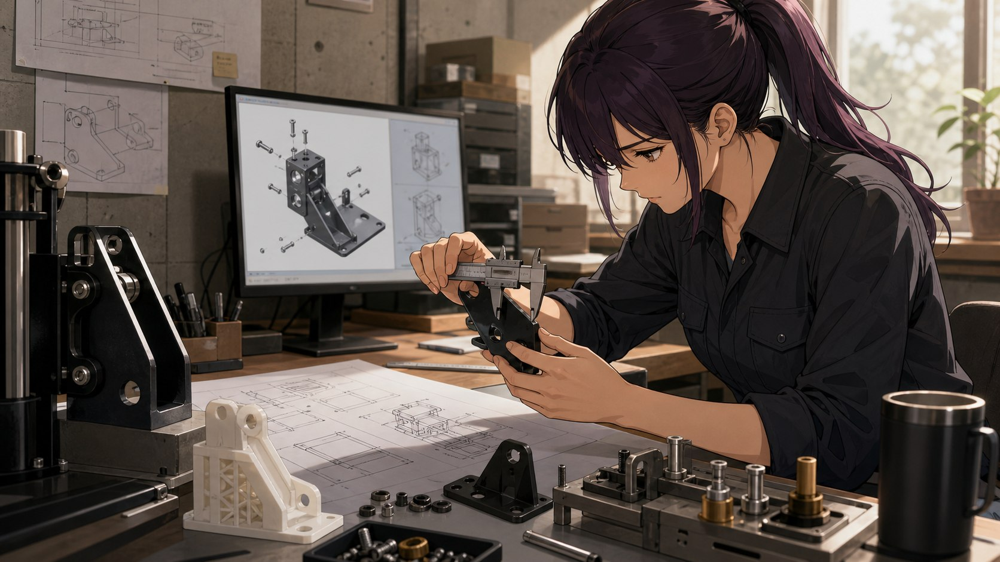

工業零件與工具建模Industrial 3D Modeling
針對工具、零件、支架與機構需求進行建模、裝配確認與製作資料整理。

01 — REAL EVIDENCE
先看零件、安裝與實體結果。
工業建模以尺寸、裝配與製作為判斷基礎，不用角色插圖代替作品證據。


02 — CONSTRAINTS
從用途、尺寸與安裝限制開始
- 01
市售零件無法使用
安裝空間、固定點或使用條件需要客製零件。
- 02
概念需要實體化
已有功能想法，希望轉為可檢查與可製作的模型。
- 03
零件必須互相配合
單一外型之外，還需要處理裝配、間隙與實際位置。
- 04
製作前需要確認
希望透過模型、Prototype 或 3D 列印降低直接製作的不確定性。
03 — MODEL TO OBJECT
建模、裝配、輸出與實體驗證
- 01
確認用途與安裝限制
- 02
建立零件及組合關係
- 03
檢查裝配與製作條件
- 04
輸出資料並配合實體驗證
SCOPE & OUTPUT
模型之外，也要確認製作條件
OUTPUT
可以被確認的交付內容
- 零件與組合件建模
- 安裝與空間條件確認
- 製作圖面或輸出資料
- 3D 列印與成品驗證支援
SERVICE BOUNDARY
合作前先確認的界線
以工業工具、零件、支架與機構建模為主，不以角色、場景或純藝術造型建模為主要服務。材料與製程仍需配合實際製造端確認。
WORKING SCENE
工具不同，工作重點也不同。
以下為 AI 輔助情境插圖，用來呈現工作方式與角色語言，不代表特定客戶或實際專案成果。

ADVANTAGES
不是藝術造型，是可使用的工業零件
- 從實際用途、固定點與安裝空間開始
- 不只建立單一外型，也處理零件與組裝關係
- 模型與輸出資料會考慮後續製作方式
- 可配合 Prototype、3D 列印與實體裝配驗證